Tactile sensing
for robotics.
From triboelectric stiffness sensing to visuo-tactile terrain identification, extracting useful contact information for robotic perception.
Zhentan Quan · Tsinghua University
Exploring tactile sensing, functional materials
and the robots that connect them.
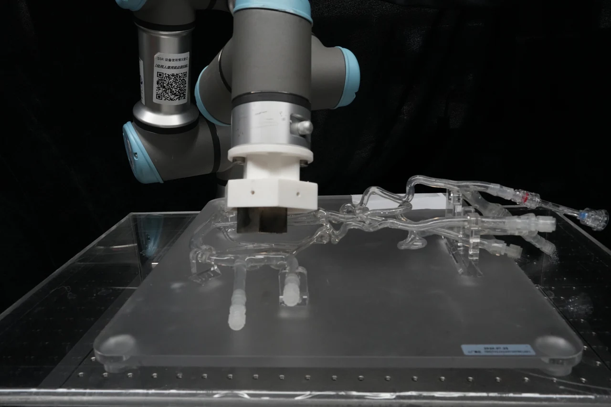
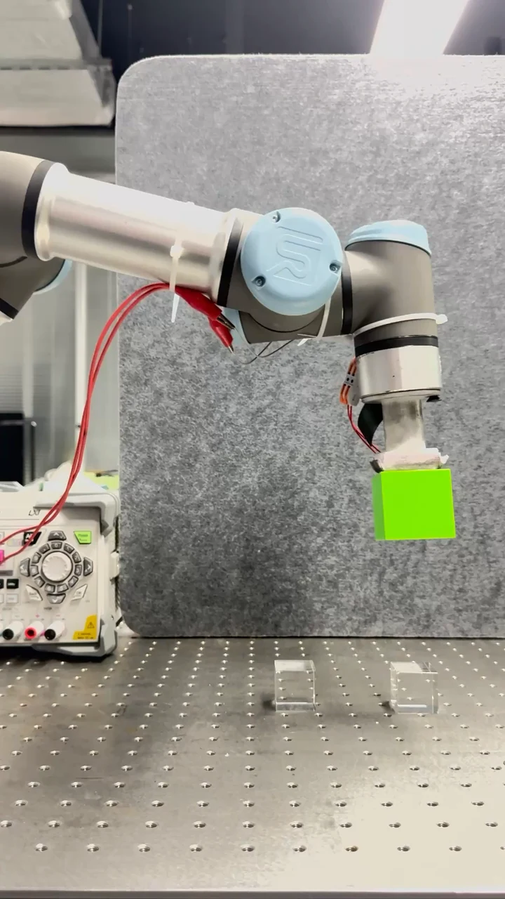
Research focus
My work connects mechanical design, electronic information and materials science.
From triboelectric stiffness sensing to visuo-tactile terrain identification, extracting useful contact information for robotic perception.
Exploring liquid metal phase transitions, robotic adhesion and controlled motion through experimental student projects.
Triboelectric energy harvesting, deformation sensing and contributions to origami-inspired near-sensor computing systems.
Published research
Selected journal articles across tactile sensing, energy harvesting and near-sensor computing.
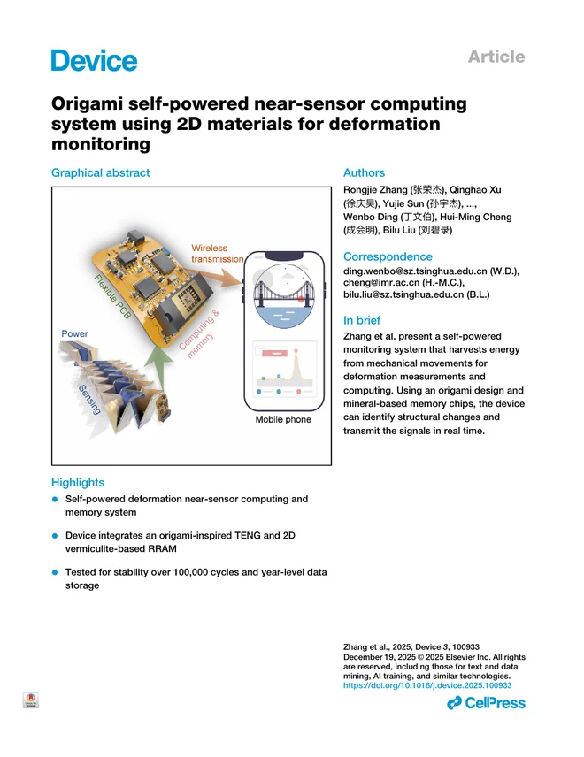
Device · 2025
† Equal contribution
An origami-inspired triboelectric device drives two-dimensional vermiculite memory to combine self-powered structural deformation sensing, local computing, and storage.
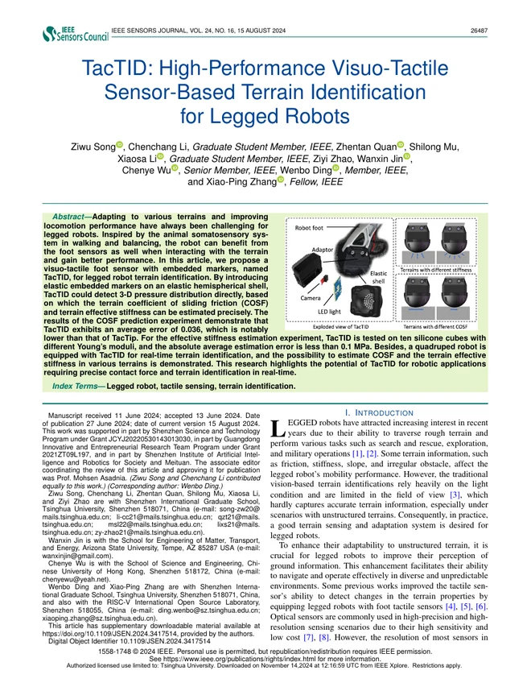
IEEE Sensors Journal · 2024
† Equal contribution
A visuo-tactile foot sensor estimates terrain friction and effective stiffness from three-dimensional pressure information for real-time terrain identification with a quadruped robot.
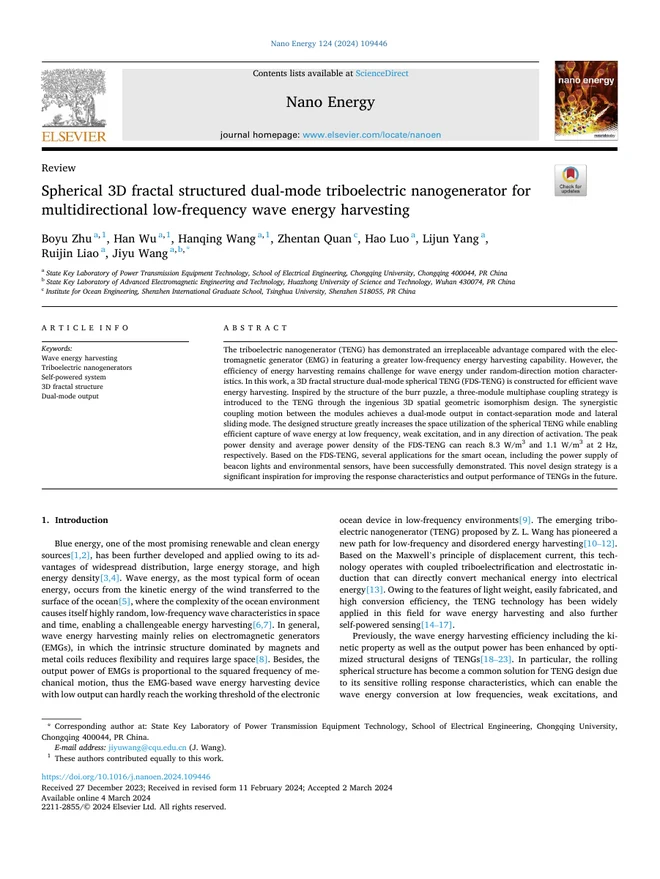
Nano Energy · 2024
† Equal contribution
A spherical, fractal-structured triboelectric nanogenerator combines two operating modes to harvest multidirectional low-frequency wave energy.
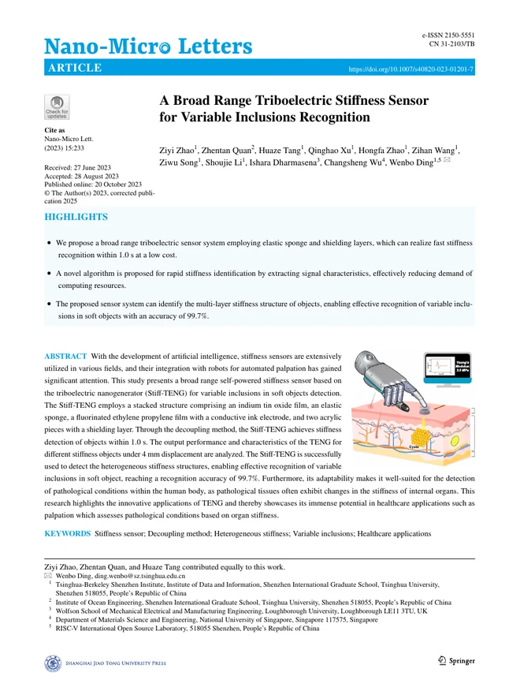
Nano-Micro Letters · 2023 · Co-first author
† Equal contribution
A self-powered triboelectric stiffness sensor decouples force and displacement signals and applies signal processing and SVM classification to recognize inclusions in soft objects.
Design. Build. Test.
A collection of hands-on explorations in robotics, liquid metals, energy harvesting and assistive mechanisms.
Experimental research
A Ga–Bi–In–Sn liquid metal system for robotic adhesion through controlled phase transitions.
Alloy composition screening and DSC characterization support a temperature-controlled demonstration of picking up, holding and placing a cube.
Exploratory research
A robot-assisted laboratory platform for studying magnetic control of liquid metal droplet motion through transparent channels.
The project also explores preliminary path planning for liquid metal navigation.
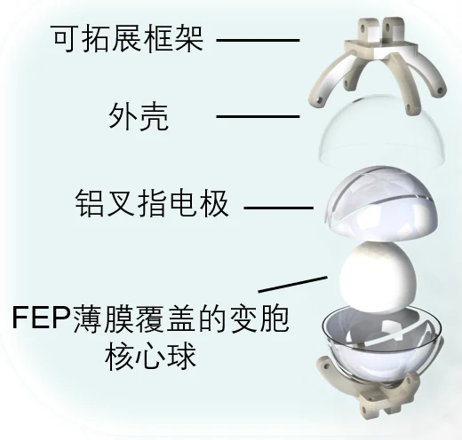
Design & experimental testing
A horizontal pendulum triboelectric nanogenerator design and test platform for low-frequency wave energy harvesting.
The work investigates mechanical motion and frictional contact-area optimization, with metamorphic mechanism concepts.
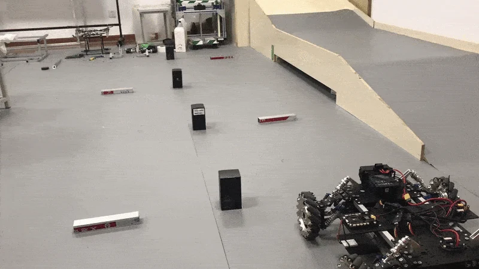
2019–2022
Mobile robot projects for RoboMaster, with hardware prototypes and an indoor test course.
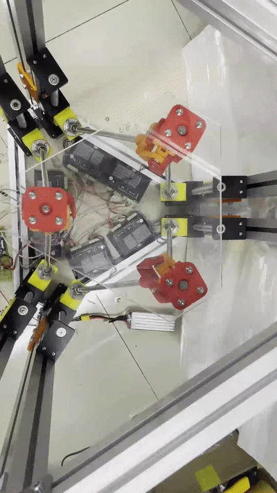
2021
Experimental work on a parallel mechanism with actuated hardware.
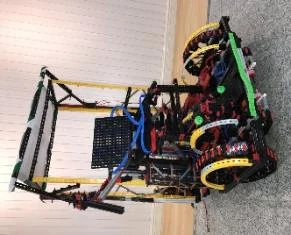
Patent granted · 2020
An assistive wheelchair project with a prototype shown in the presentation and a related design for switchable wheel and crawler mobility and a lifting seat.
First-listed co-inventor on the related utility model patent.
Related utility model CN211835060U granted in 2020.
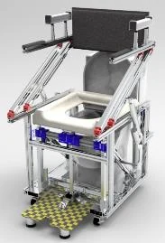
2019–2020
A mechanical aid designed to assist sitting and standing during toileting, combining an underarm support linkage with a lifting and tilting seat.
Team design contributor and co-inventor, listed second on the utility model patent.
Utility model CN210748984U granted in 2020.
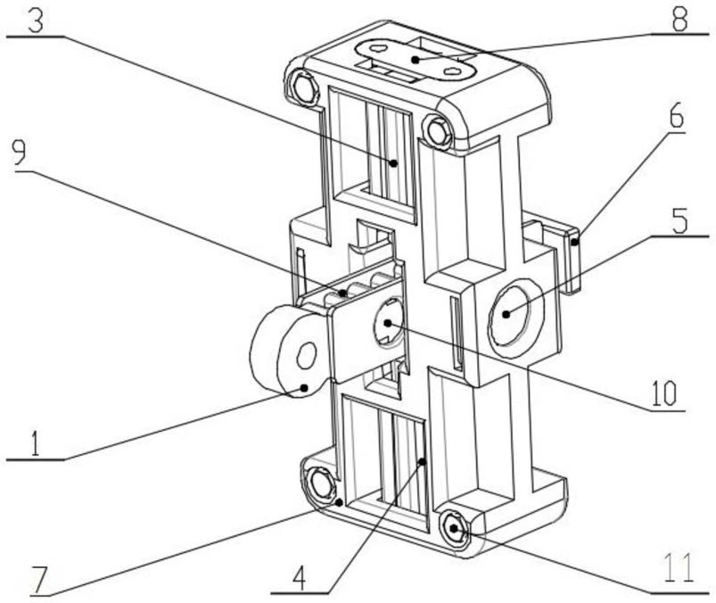
2019–2020
A mechanical door checker combining a slotted limiting rod, paired locking elements and spring-loaded deceleration components to regulate door opening.
Co-inventor, listed fifth. The patent record contains a registration spelling error in my name.
Chinese utility model CN210888469U, granted 30 June 2020; application 201921497267.0.
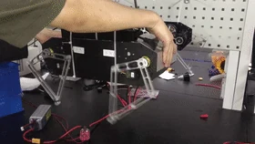
2019
Early work on a quadruped robot prototype in the Zhejiang Sci-tech University–Unitree joint lab.
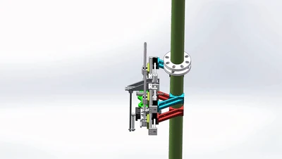
2019
A climbing robot concept built around a mechanism for a vertical pole.
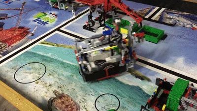
2015
An early robotics project featuring a mobile robot on a task field.
No projects in this category.
About
I am a Ph.D. student in Materials Science and Engineering at Tsinghua University, with a master's background in electronic information and a bachelor's background in mechanical engineering.
My research experience spans tactile sensing for robotics, self-powered systems and near-sensor computing. I am interested in connecting materials and sensing with useful contact information for intelligent systems.
2024 — present
Ph.D. student · Materials Science and Engineering · Shenzhen International Graduate School
2021 — 2024
M.Eng. · Electronic Information
2017 — 2021
B.Eng. · Mechanical Design, Manufacturing and Automation
May — Aug 2025
R&D internship in AI applications, composite materials knowledge organization and GraphRAG.
Aug — Sep 2023
Research support in computing infrastructure and integrated sensing, communication and computing.
2022 — 2025
Teaching and research assistant · Information technology, brain-inspired computing and liquid metal deformable robotics.
2020 — 2021
Research assistant · Hardware implementation and control framework development.
Connect
For academic exchange and research discussions.
qzt24@mails.tsinghua.edu.cn